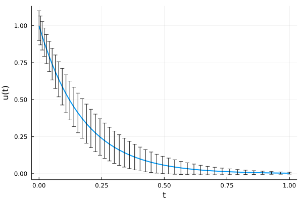

Generic programming
Contents
Generic programming#
We have seen duck typing as a convient abstraction tool for data types:
As a user, we don’t have to care about how a specific type, say an
Array, is implemented. By being an array (i.e. a subtype ofAbstractArray) it behaves like we expect and we can just use it.As a developer, as long as we make our objects behave like, say, and
AbstractArray, we can implement it in whatever way we deem appropriate and it will work with all kinds of algorithms.
Building upon this principle, we also want to formulate our algorithms in an abstract way such that it works will all kinds of data types irrespective of their precise implementation (or even meaning). This is generally known as generic programming.
From Wikipedia:
Generic programming is a style of computer programming in which algorithms are written in terms of types to-be-specified-later that are then instantiated when needed for specific types provided as parameters.
Example 1: Summation#
function sum_naive(x)
s = 0.0
for xi in x
s += xi
end
return s
end
sum_naive (generic function with 1 method)
function sum_generic(x)
s = zero(eltype(x))
for xi in x
s += xi
end
return s
end
sum_generic (generic function with 1 method)
using BenchmarkTools
x = rand(100_000);
@btime sum_naive($x);
@btime sum_generic($x);
133.679 μs (0 allocations: 0 bytes)
133.674 μs (0 allocations: 0 bytes)
x = rand(Int, 100_000);
@btime sum_naive($x);
@btime sum_generic($x);
133.695 μs (0 allocations: 0 bytes)
11.603 μs (0 allocations: 0 bytes)
Example 2: Vandermonde matrix#
(modified from Steven’s Julia intro)
\begin{align}V=\begin{bmatrix}1&\alpha _{1}&\alpha _{1}^{2}&\dots &\alpha _{1}^{n-1}\1&\alpha _{2}&\alpha _{2}^{2}&\dots &\alpha _{2}^{n-1}\1&\alpha _{3}&\alpha _{3}^{2}&\dots &\alpha _{3}^{n-1}\vdots &\vdots &\vdots &\ddots &\vdots \1&\alpha _{m}&\alpha _{m}^{2}&\dots &\alpha _{m}^{n-1}\end{bmatrix}\end{align}
using PythonCall
np = pyimport("numpy")
Python module: <module 'numpy' from '/usr/local/lib/python3.9/dist-packages/numpy/__init__.py'>
np.vander(1:5, increasing=true)
Python ndarray:
array([[ 1, 1, 1, 1, 1],
[ 1, 2, 4, 8, 16],
[ 1, 3, 9, 27, 81],
[ 1, 4, 16, 64, 256],
[ 1, 5, 25, 125, 625]])
The source code for this function is here. It calls np.multiply.accumulate which is implemented in C here. However, this code doesn’t actually perform the computation, it basically only checks types and stuff. The actual kernel that gets called is here. This isn’t even C code but a template for C code which is used to generate type specific kernels.
Overall, this setup only supports a limited set of types, like Float64, Float32, and so forth.
Here is our simple generic Julia implementation
function vander(x::AbstractVector{T}) where {T}
m = length(x)
V = Matrix{T}(undef, m, m)
for j = 1:m
V[j, 1] = one(x[j])
end
for i = 2:m
for j = 1:m
V[j, i] = x[j] * V[j, i-1]
end
end
return V
end
vander (generic function with 1 method)
vander(1:5)
5×5 Matrix{Int64}:
1 1 1 1 1
1 2 4 8 16
1 3 9 27 81
1 4 16 64 256
1 5 25 125 625
A quick speed comparison#
Show Code
using BenchmarkTools, Plots
ns = exp10.(range(1, 4, length=30));
tnp = Float64[]
tjl = Float64[]
for n in ns
x = 1:n |> collect
push!(tnp, @belapsed np.vander(\$x) samples=3 evals=1)
push!(tjl, @belapsed vander(\$x) samples=3 evals=1)
end
plot(ns, tnp./tjl, m=:circle, xscale=:log10, xlab="matrix size", ylab="NumPy time / Julia time", legend=:false)
Note that the clean and concise Julia implementation is beating numpy’s C implementation for small matrices and is on-par for large matrix sizes.
At the same time, the Julia code is generic and works for arbitrary types!
vander(Int32[4, 8, 16, 32])
4×4 Matrix{Int32}:
1 4 16 64
1 8 64 512
1 16 256 4096
1 32 1024 32768
It even works for non-numerical types. The only requirement is that the type has a one (identity element) and a multiplication operation defined.
New “features” emerging from generic programming#
Symbolic computations#
using Symbolics
@variables a b c d e
v = vander([a, b, c, d, e])
substitute(v, Dict(b => 2, d => 4))
Arbitrary precision computing#
x = rand(BigFloat, 10)
10-element Vector{BigFloat}:
0.8772727143694891624261112452133056240181068101730201089096315063048334530064084
0.6336799535516246680399883895035573023032582166781061866613957331243008316832381
0.9737581332566306566465365150015104951288361866689722946239538776997952625930387
0.6586917316797102470351520082650132672060805050809432033266130761254777918389861
0.1951671731140842128374768888741702812230804417793898110074784324918141981970544
0.4996601362225712422669065131628469325201189313166098950373679735320276128089452
0.3299903009471492560872503678679815890174025184661081229413094385891527384129877
0.2319721474345972983938397551214701501943485163294349812563635812173437761637152
0.5974811484109931176280601599941437955824382867553832898605842096688062578921849
0.8543436675642250581403488033455191652606874574738090440456122387572832936560574
sum(x)
5.852017106551074919501670646349518602454357870721776937670310067510835216252633
Differential equation solving with uncertainty#
Code:
using OrdinaryDiffEq, Measurements, Plots
#Half-life of Carbon-14 is 5730 years.
c = 5.730 ± 2
#Setup
u0 = 1.0 ± 0.1
tspan = (0.0, 1.0)
#Define the problem
radioactivedecay(u,p,t) = -c*u
#Pass to solver
prob = ODEProblem(radioactivedecay,u0,tspan)
sol = solve(prob, Tsit5(), reltol=1e-8, abstol=1e-8);
plot(sol.t, sol.u, ylabel="u(t)", xlabel="t", lw=2, legend=false)
Output:

Historical note: In some sense, Julia implemented that feature by itself. The authors of Measurements.jl and DifferentialEquations.jl never had any collabration on this.
Core messages of this Notebook#
Julia can be fast.
A function is compiled when called for the first time with a given set of argument types.
The are multiple compilation steps all of which can be inspected through macros like
@code_warntype.Code specialization based on the types of all of the input arguments is important for speed.
Calculations can be moved to compile-time to make run-time faster.
In virtually all cases, explicit type annotations are irrelevant for performance.
Type annotations in function signatures define a type filter/user interface.